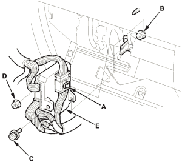
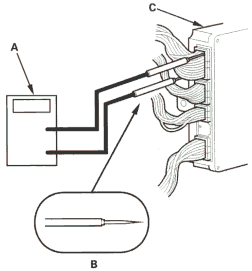
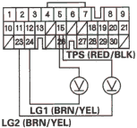

- Warm up the engine to normal operating temperature (the radiator fan comes on).
- Apply the parking brake and block rear wheels. Start the engine, then shift to
 position while pressing the brake pedal. Press the accelerator pedal and release it suddenly. The engine should not stall.
position while pressing the brake pedal. Press the accelerator pedal and release it suddenly. The engine should not stall. - Test in
 position:
position:
Park the vehicle in a slope about 16°, apply parking brake and shift into position. Release the brake; the vehicle should not move.
- Test-drive the vehicle on a flat road in the position shown in the table. Check that the engine speeds meet the approximate vehicle speeds shown in the table.
- Remove the glove box stop, then open the glove box.
- Remove the harness connector clamp (A) from its bracket.
- Loosen the mounting nut (B) on the lower right of the PCM and remove the mounting bolt (C) and nut (D) on the left of the PCM.
- Lift the PCM up to clear the mounting nut on the lower right of the PCM, then pull out the PCM (E).

- Set the digital multitester (A) to check voltage between PCM connector terminals A15 (+) and A23 (-) or A24 (-) for throttle position sensor with tapered tip probe (B).

PCM CONNECTOR A (31P)

Wire side of female terminals